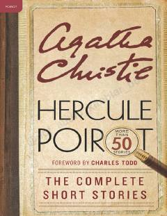

HPErkyul Puaro ishtirokidagi barcha qisqa hikoyalarning to'liq to'plami.
Ushbu to'plam mashhur detektiv Erkyul Puaro ishtirokidagi barcha qisqa hikoyalarni o'z ichiga oladi. Kitobda Puaroning jinoyatlarni ochishdagi o'tkir aqli va Agatha Christiening murakkab syujetlari jamlangan.